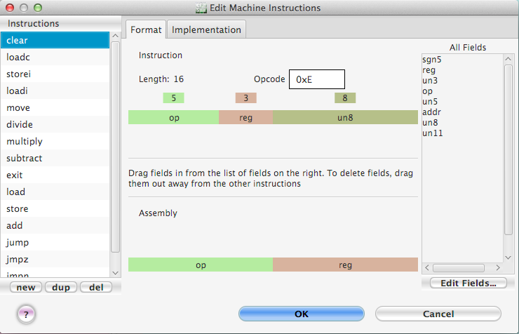
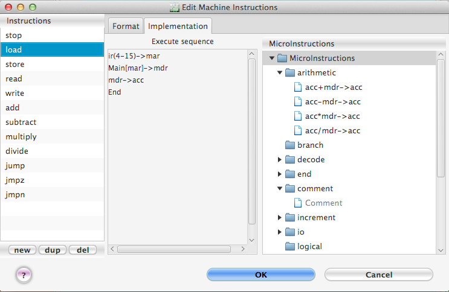

The machine instructions dialog (see Figure 21a) allows you to edit all machine instructions for the current machine.

Figure 21a. The dialog for editing machine instructions.
The left section of the dialog
The table on the left part of the dialog displays names of all existing machine instructions. The right part of the dialog is for editing the format and the execute sequence (that is, the list of microinstructions that are executed when the machine instruction is executed) for the currently selected machine instruction.
To edit the name of a machine instruction, just click or double-click on it in the list on the left.To delete a machine instruction, first select it by clicking on it in the list on the left. Then click the del button below the table.
To create a new machine instruction, click the new button.
The dup button below the left table allows you to easily create new machine instructions that are variations on other machine instructions. To use this feature, first select in the left list the machine instruction you wish to duplicate. Then click in the dup button. A new machine instruction will be created with the same format and sequence of microinstructions. You can then edit the name of the new instruction, its opcode and format, and its microinstructions as you would any other machine instruction.
The right section of the dialog
Format
To edit the opcode of an instruction, just double-click on the opcode entry and type in a new value. If you wish to delete one of the fields from the instruction, delete it by dragging it out of the colored bar in which it appears. If you wish to insert a new field in the instruction, drag in the field you want from the list on the right. To reorder the fields, just drag them left or right in the bar.
Implementation
To edit an instruction's execute sequence, first select the instruction you wish to edit by clicking on its name in the list on the left. Its execute sequence will appear in the list in the center of the dialog box. The list on the far right shows all existing microinstructions. See Figure 21b .
To insert a new microinstruction in the execute sequence, drag the microinstruction you want from the list on the right into the execute sequence.

Figure 21b. Editing the implementation of machine instructions.
To delete a microinstruction from the execute sequence, delete it by dragging it out from the sequence.
To reorder the microinstructions in the execute sequence of the current machine instruction, click on the microinstruction you want to move and drag it up or down to its new position.
In the list of all microinstructions on the right, there is a microinstruction named "Comment". When executed, this microinstruction does nothing. Instead, this microinstruction plays the role of a comment in the machine instruction's implementation. Once you have added a Comment micro to a machine instruction's execute sequence, you can edit the comment by double-clicking it (or pressing F2). Comments are colored gray to distinguish them from regular microinstructions. It is recommended, for readability, that you start all comments with a special comment character to distinguish them from regular microinstructions.
Note: When creating or editing the implementation of a machine instruction, you need to use at least one End microinstruction. The End microinstruction indicates the end of the machine cycle and so causes CPU Sim to start a new machine cycle, beginning with the fetch sequence.